Cogumelos do 'Prado ao Prato' é um projeto dedicado à
produção sustentável de cogumelos gourmet e medicinais, com o
objetivo de promover uma alimentação mais saudável e consciente.
Cultivamos com respeito pelo ciclo natural, valorizando práticas
ecológicas e de proximidade.
Trabalhamos com métodos de agricultura regenerativa, reduzindo o
desperdício e reutilizando subprodutos naturais como substrato. Do
campo ao consumidor, garantimos rastreabilidade, frescura e sabor
inigualável.
SOBRE NÓS

A NOSSA PRODUÇÃO
Junto com os nossos parceiros, cultivamos diferentes variedades de
cogumelos como o ostra, cardo e juba de leão, todos com benefícios
nutricionais e propriedades terapêuticas reconhecidas. Utilizamos
substratos naturais e controlamos cuidadosamente os parâmetros de
cultivo (humidade, temperatura, luz) para garantir um ambiente
ideal.
O resultado são cogumelos com excelente textura, aroma e valor
gastronómico.
DO PRADO AO PRATO
Mais do que produtores, somos apaixonados pela cozinha! Trabalhamos
com chefs, restaurantes e cozinheiros domésticos para inspirar novas
formas de cozinhar cogumelos — desde pratos tradicionais até
criações inovadoras e veganas.
Os nossos cogumelos vão do cultivo diretamente para a sua cozinha,
sem intermediários, garantindo frescura e sabor no seu auge.
Cogumelos do ‘Prado ao Prato’ reflete uma abordagem de inovação multi-actor que integra sectores académico e não-académico, público e privado.
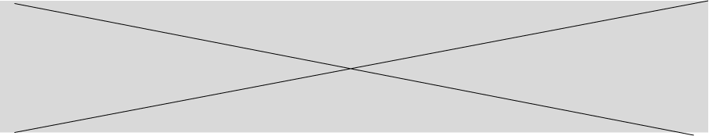
OS NOSSOS PARCEIROS

 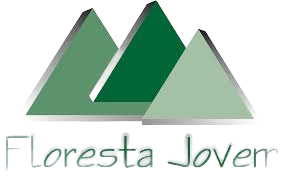
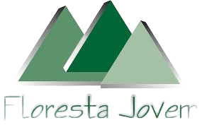

 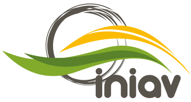
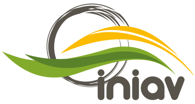
 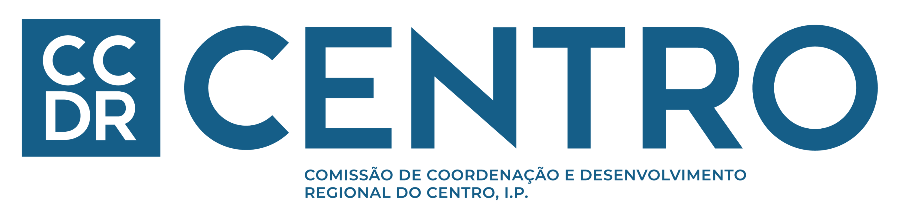
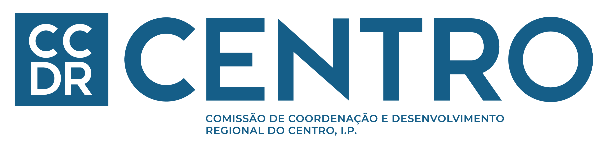

 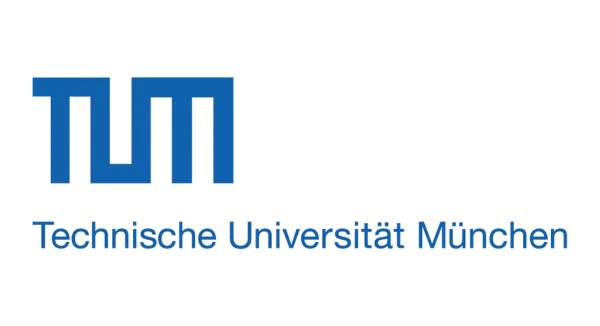
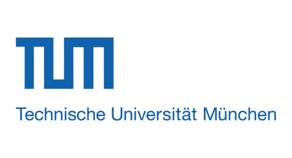
ENTIDADE FINANCEIRA
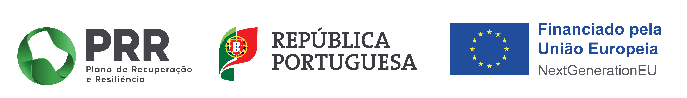
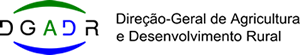
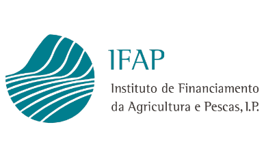
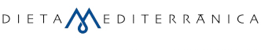

ENTIDADE COORDENADORA
.png)
.png)
.png) 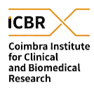
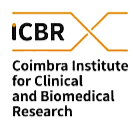
PÓS PROJETO


.png)